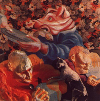

Los Discos... |
||||

|
Voz: Indio Invitados: Lito Vitale (teclados) en Blues de la Artillería, Luis Mississipi Robinson (armónica) en Tarea fina. Técnico de grabación: Mario Breuer, Roberto Fernández y Gustavo Gauvry Arte de tapa: Rocambole y Adán Cohen Grabado en Estudio Del Cielito entre mayo y julio de 1991
|
|||
Página 07 |
||||